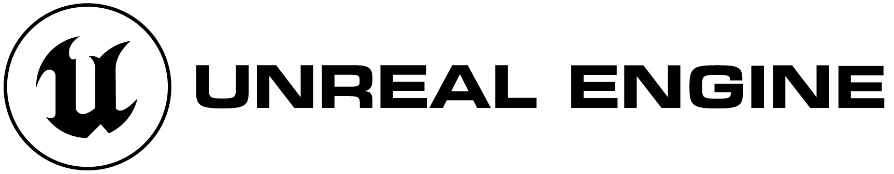

게임 제작 기술과 이를 표현하는 컴퓨터그래픽스 기술에 관심이 있기 때문에,
관심있는 게임 제작 엔진들과, 컴퓨터 그래픽스 기술들을 소개해 드리겠습니다.
| 관심 엔진 | 로고이미지 | 엔진 소개 | 개발된 게임 |
|---|---|---|---|
| 언리얼 엔진 |  | 에픽 게임즈에서 개발한 상용 엔진으로 세계 점유율 1위로 가장 많이 사용되고 있습니다. 주로 중/대규모에서 AAA급 게임의 개발에 사용되고 있습니다. |
|
| 유니티 엔진 | Unity Technologies가 개발한 게임 엔진으로 세계 점유율 2위로 언리얼 엔진 다음으로 가장 많이 사용되고 있습니다. 주로 저사양/소규모 게임의 개발에 사용되고 있습니다. |
|
|
| 고도 엔진 | 아르헨티나의 개발자인 Juan Linietsky와 Ariel Manzur가 개발한 게임 엔진입니다. 엔진이 매우 가볍고, MIT라이선스 기반 오픈소스로 배포되는 것이 특징입니다. |
| 관심 기술 | 로고이미지 | 기술 소개 |
|---|---|---|
| OpenGL | 1992년 실리콘 그래픽스사에서 만든 2차원 및 3차원 그래픽스 표준 API 규격입니다. 현재 CAD, 가상현실, 정보시각화, 비행 시뮬레이션 등의 분야에서 활용되고 있으며, 컴퓨터 게임 분야에서도 널리 활용되고 있습니다. |
|
| Direct3D | 마이크로소프트가 개발한 윈도우용 종합 멀티미디어 라이브러리에 포함된 3차원 그래픽스 연산과 출력을 담당하는 컴포넌트입니다. DirectX 2.0부터 도입된 3D 그래픽 API이자 가장 긴 역사를 지니고 있는 컴포넌트로 3D 그래픽의 중요성이 커진 이후로 지금까지 DirectX 전체를 통틀어서 가장 높은 비중을 차지하고 있습니다. |